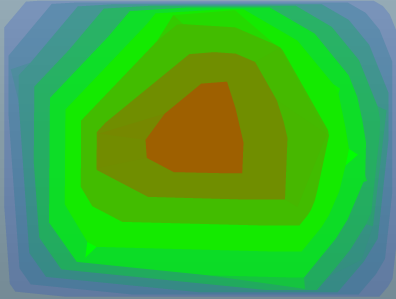

You can create a valued heat map control in MXML using
the <ilog:ValuedHeatMap> tag. If you
intend to refer to this control elsewhere in your MXML, for example,
in another tag or in an ActionScript®
block, you must specify an id value.
A heat map control displays the value property for a set of points using a dataProvider object as shown in the following example.
<?xml version="1.0" encoding="utf-8"?>
<mx:Application xmlns:mx="http://www.adobe.com/2006/mxml"
xmlns:ilog="http://www.ilog.com/2007/ilog/flex"
layout="absolute">
<ilog:ValuedHeatMap width="100%" height="100%" >
<ilog:dataProvider>
<mx:XMLList>
<point x = "173.2" y = "15.9" value = "60.1" />
<point x = "97.3" y = "169.1" value = "72.5" />
<point x = "297.5" y = "208.0" value = "69.4" />
<point x = "386.4" y = "111.2" value = "32.0" />
<point x = "326.7" y = "135.0" value = "64.0" />
<point x = "85.2" y = "258.7" value = "50.0" />
<point x = "358.0" y = "155.6" value = "50.0" />
<point x = "305.0" y = "289.8" value = "41.1" />
<point x = "199.3" y = "148.0" value = "90.0" />
<point x = "208.0" y = "101.3" value = "86.1" />
<point x = "48.7" y = "223.4" value = "44.8" />
<point x = "10.7" y = "70.2" value = "22.4" />
<point x = "234.9" y = "10.9" value = "57.1" />
<point x = "367.1" y = "181.7" value = "43.7" />
<point x = "339.9" y = "89.6" value = "52.8" />
<point x = "361.7" y = "260.4" value = "28.6" />
<point x = "236.2" y = "73.4" value = "78.5" />
<point x = "98.8" y = "134.4" value = "73.2" />
<point x = "373.0" y = "227.0" value = "32.6" />
<point x = "279.4" y = "48.9" value = "63.6" />
<point x = "0.0" y = "0.0" value = "0.0" />
<point x = "400.0" y = "0.0" value = "0.0" />
<point x = "400.0" y = "300.0" value = "0.0" />
<point x = "0.0" y = "300.0" value = "0.0" />
</mx:XMLList>
</ilog:dataProvider>
<ilog:colorModel>
<ilog:ColorModel>
<ilog:ColorEntry color="0x0000ff" limit="0" alpha="0"/>
<ilog:ColorEntry color="0x00ff00" limit="50" />
<ilog:ColorEntry color="0xff0000" limit="100" alpha="1"/>
</ilog:ColorModel>
</ilog:colorModel>
</ilog:ValuedHeatMap>
</mx:Application>
The following figure shows the resulting valued heat
map.
